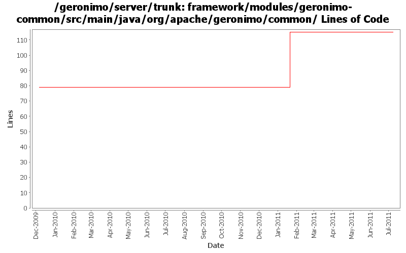

[root]/framework/modules/geronimo-common/src/main/java/org/apache/geronimo/common
 propertyeditor
(4 files, 565 lines)
propertyeditor
(4 files, 565 lines)

| Author | Changes | Lines of Code | Lines per Change |
|---|---|---|---|
| Totals | 6 (100.0%) | 36 (100.0%) | 6.0 |
| xuhaihong | 4 (66.7%) | 36 (100.0%) | 9.0 |
| gawor | 2 (33.3%) | 0 (0.0%) | 0.0 |
GERONIMO-6058 Replace StringBuffer usage with StringBuilder
0 lines of code changed in 2 files:
GERONIMO-5680 Remove dynamic import * and use calculated import packages on the runtime, only for deployed applications now
36 lines of code changed in 1 file:
GERONIMO-5008 Create util methods for all the Geronimo components
0 lines of code changed in 1 file:
some jars don't have manifest file
0 lines of code changed in 2 files: